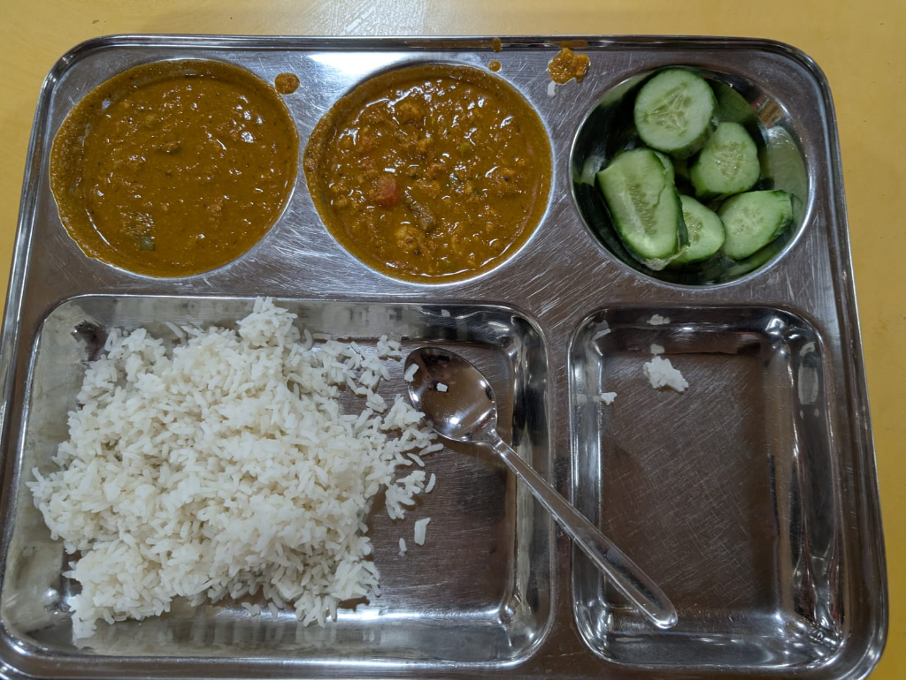
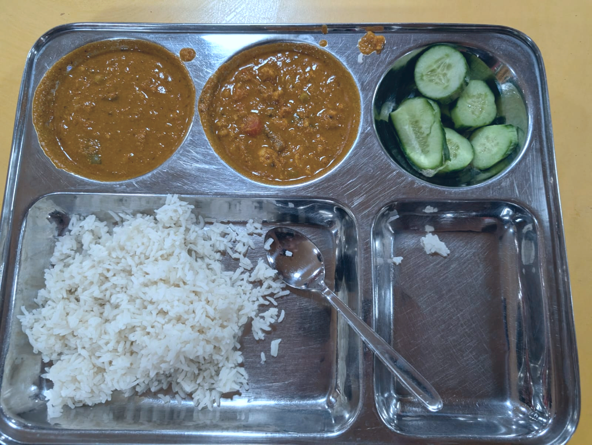
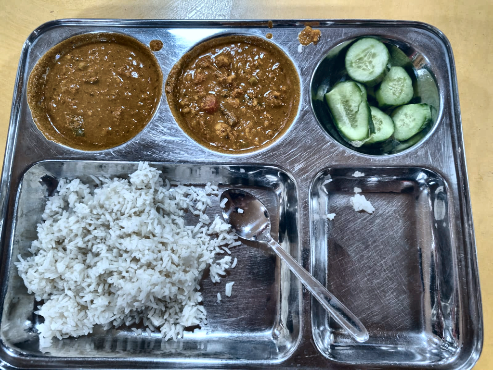
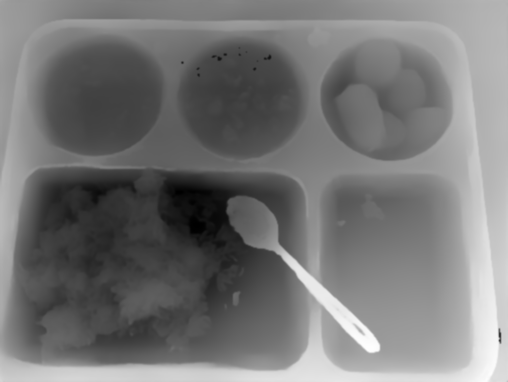
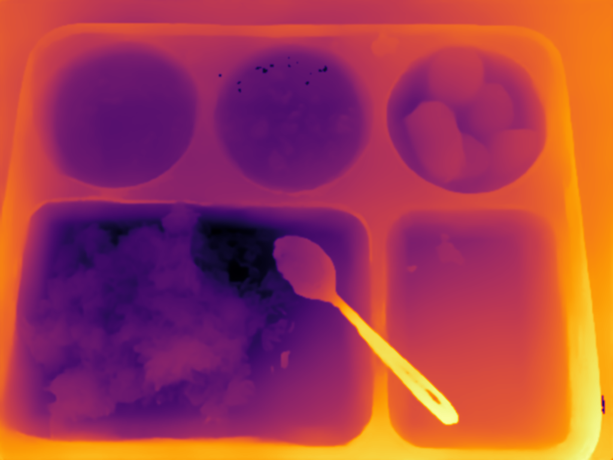
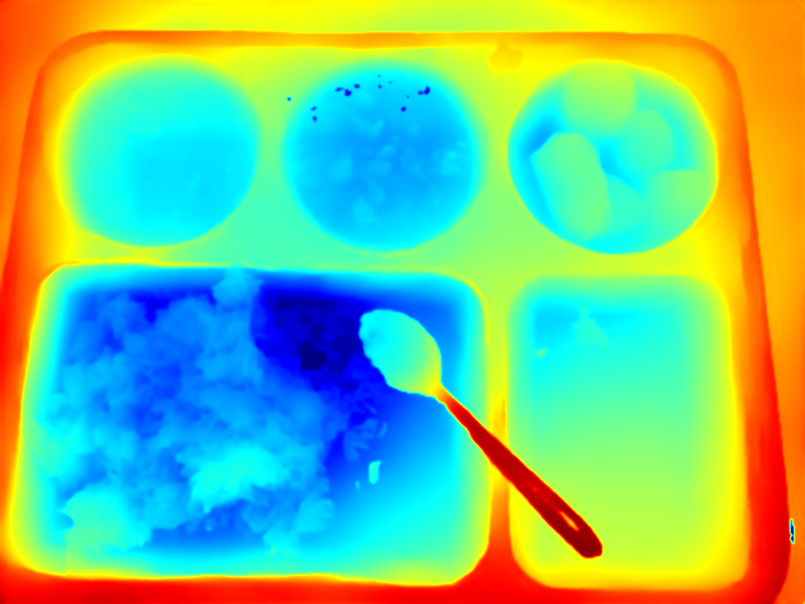
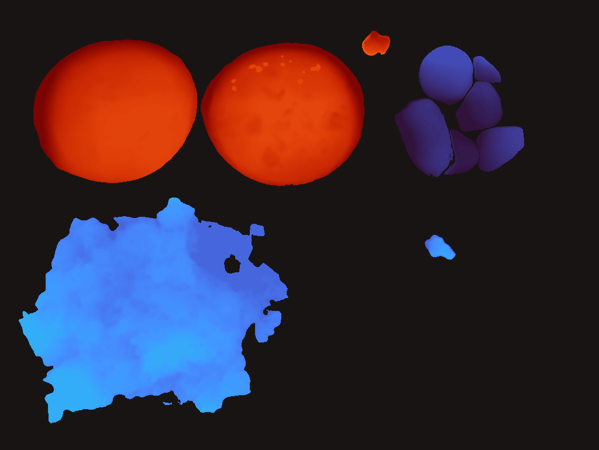
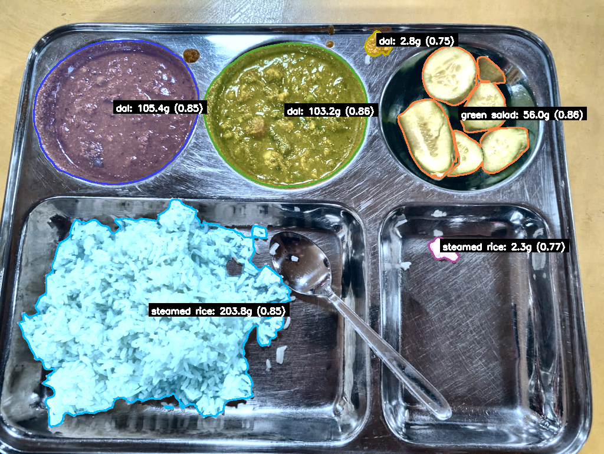

{
"resolution": "1600x1204",
"channels": 3,
"dtype": "uint8",
"expected_items": [
"dal",
"steamed rice",
"green salad"
],
"plate_profile": null,
"debug": true
}








[]
{
"item_id": "green salad_1",
"area_pixels": 30266,
"estimated_height_cm": 1.395,
"volume_estimate_ml": 53.4,
"density": 1.05,
"mass_g": 56.0,
"class_label": "green salad",
"class_confidence": 0.8805,
"depth_stability": 1.0,
"scale_confidence": 0.7,
"composite_confidence": 0.8583,
"prior_applied": true,
"diagnostics": {
"original_sam3_query": "cucumber",
"candidate_labels": [
"cucumber"
],
"menu_matching_result": "green salad",
"final_food_label": "green salad",
"confidence": 0.8805,
"uncertainty": 0.1195,
"original_mask_id": "mask_00",
"grouped_instance_id": "inst_0",
"fragment_count": 6,
"decision_reason": "FRAGMENT_GROUPED_6_PIECES"
},
"fragment_count": 1
}{
"item_id": "dal_2",
"area_pixels": 53211,
"estimated_height_cm": 3.8,
"volume_estimate_ml": 94.9,
"density": 1.087,
"mass_g": 103.2,
"class_label": "dal",
"class_confidence": 0.8794,
"depth_stability": 1.0,
"scale_confidence": 0.7,
"composite_confidence": 0.8578,
"prior_applied": true,
"diagnostics": {
"original_sam3_query": "dal tadka",
"candidate_labels": [
"dal tadka"
],
"menu_matching_result": "dal",
"final_food_label": "dal",
"confidence": 0.8794,
"uncertainty": 0.1206,
"original_mask_id": "mask_01",
"grouped_instance_id": "inst_1",
"fragment_count": 1,
"decision_reason": "SINGLE_INSTANCE"
},
"fragment_count": 1
}{
"item_id": "dal_3",
"area_pixels": 54244,
"estimated_height_cm": 3.8,
"volume_estimate_ml": 96.7,
"density": 1.089,
"mass_g": 105.4,
"class_label": "dal",
"class_confidence": 0.8728,
"depth_stability": 1.0,
"scale_confidence": 0.7,
"composite_confidence": 0.8545,
"prior_applied": true,
"diagnostics": {
"original_sam3_query": "dal tadka",
"candidate_labels": [
"dal tadka"
],
"menu_matching_result": "dal",
"final_food_label": "dal",
"confidence": 0.8728,
"uncertainty": 0.1272,
"original_mask_id": "mask_02",
"grouped_instance_id": "inst_2",
"fragment_count": 1,
"decision_reason": "SINGLE_INSTANCE"
},
"fragment_count": 1
}{
"item_id": "steamed rice_4",
"area_pixels": 115896,
"estimated_height_cm": 1.803,
"volume_estimate_ml": 208.6,
"density": 0.977,
"mass_g": 203.8,
"class_label": "steamed rice",
"class_confidence": 0.8549,
"depth_stability": 1.0,
"scale_confidence": 0.7,
"composite_confidence": 0.8457,
"prior_applied": true,
"diagnostics": {
"original_sam3_query": "rice",
"candidate_labels": [
"rice"
],
"menu_matching_result": "steamed rice",
"final_food_label": "steamed rice",
"confidence": 0.8549,
"uncertainty": 0.1451,
"original_mask_id": "mask_03",
"grouped_instance_id": "inst_4",
"fragment_count": 1,
"decision_reason": "SINGLE_INSTANCE"
},
"fragment_count": 1
}{
"item_id": "steamed rice_5",
"area_pixels": 1345,
"estimated_height_cm": 1.807,
"volume_estimate_ml": 2.4,
"density": 0.93,
"mass_g": 2.3,
"class_label": "steamed rice",
"class_confidence": 0.7034,
"depth_stability": 1.0,
"scale_confidence": 0.7,
"composite_confidence": 0.7671,
"prior_applied": true,
"diagnostics": {
"original_sam3_query": "white rice",
"candidate_labels": [
"white rice"
],
"menu_matching_result": "steamed rice",
"final_food_label": "steamed rice",
"confidence": 0.7034,
"uncertainty": 0.2966,
"original_mask_id": "mask_04",
"grouped_instance_id": "inst_5",
"fragment_count": 1,
"decision_reason": "SINGLE_INSTANCE"
},
"fragment_count": 1
}{
"item_id": "dal_6",
"area_pixels": 1455,
"estimated_height_cm": 3.8,
"volume_estimate_ml": 2.6,
"density": 1.079,
"mass_g": 2.8,
"class_label": "dal",
"class_confidence": 0.6745,
"depth_stability": 1.0,
"scale_confidence": 0.7,
"composite_confidence": 0.7512,
"prior_applied": true,
"diagnostics": {
"original_sam3_query": "dal tadka",
"candidate_labels": [
"dal tadka"
],
"menu_matching_result": "dal",
"final_food_label": "dal",
"confidence": 0.6745,
"uncertainty": 0.3255,
"original_mask_id": "mask_05",
"grouped_instance_id": "inst_3",
"fragment_count": 1,
"decision_reason": "SINGLE_INSTANCE"
},
"fragment_count": 1
}

{
"food_items": [
{
"name": "green salad",
"volume_ml": 53.4,
"mass_g": 56.0,
"calories": 16.8,
"protein": 0.7,
"carbs": 2.6,
"fat": 0.4,
"confidence": 0.8583,
"class_label": "green salad",
"class_confidence": 0.8805,
"top_k": [
{
"label": "green salad",
"confidence": 0.8805,
"raw_similarity": 0.8805
}
],
"identification_status": "recognized",
"menu_match": true,
"matched_menu_item": "green salad",
"identification_confidence": 0.8805,
"segmentation_confidence": 0.8805,
"association_confidence": 1.0,
"menu_match_confidence": 1.0,
"depth_confidence": 1.0,
"scale_confidence": 0.7,
"diagnostics": {
"original_sam3_query": "cucumber",
"candidate_labels": [
"cucumber"
],
"menu_matching_result": "green salad",
"final_food_label": "green salad",
"confidence": 0.8805,
"uncertainty": 0.1195,
"original_mask_id": "mask_00",
"grouped_instance_id": "inst_0",
"fragment_count": 6,
"decision_reason": "FRAGMENT_GROUPED_6_PIECES"
},
"fragment_count": 1,
"food_name": "green salad",
"instance_count": 1
},
{
"name": "dal",
"volume_ml": 194.2,
"mass_g": 211.4,
"calories": 151.3,
"protein": 14.8,
"carbs": 21.1,
"fat": 0.8,
"confidence": 0.8578,
"class_label": "dal",
"class_confidence": 0.8794,
"top_k": [
{
"label": "dal",
"confidence": 0.8794,
"raw_similarity": 0.8794
}
],
"identification_status": "recognized",
"menu_match": true,
"matched_menu_item": "dal",
"identification_confidence": 0.8794,
"segmentation_confidence": 0.8794,
"association_confidence": 1.0,
"menu_match_confidence": 1.0,
"depth_confidence": 1.0,
[
{
"step": "Input",
"message": "Original image saved",
"params": {
"resolution": "1600x1204"
},
"elapsed_s": 0.114,
"input_file": null,
"output_file": "original.png",
"timestamp": "2026-11-14T20:21:19.176969"
},
{
"step": "Pipeline",
"message": "Step 1 — Preprocessing & Perspective Warp",
"params": {},
"elapsed_s": null,
"input_file": null,
"output_file": null,
"timestamp": "2026-11-14T20:21:19.176969"
},
{
"step": "Quality Gate",
"message": "PASS",
"params": {
"blur_score": 351.14,
"tilt_deg": 25.0
},
"elapsed_s": null,
"input_file": null,
"output_file": null,
"timestamp": "2026-11-14T20:21:19.279244"
},
{
"step": "Preprocessing",
"message": "Resize applied",
"params": {
"original": "1600x1204",
"target_long_edge": 1024,
"scale": 0.64
},
"elapsed_s": 0.0012,
"input_file": null,
"output_file": "01_resized.png",
"timestamp": "2026-11-14T20:21:19.321596"
},
{
"step": "Preprocessing",
"message": "Gaussian blur applied",
"params": {
"kernel": 5
},
"elapsed_s": 0.0008,
"input_file": null,
"output_file": "02_denoised.png",
"timestamp": "2026-11-14T20:21:19.360449"
},
{
"step": "Preprocessing",
"message": "LAB color normalization applied",
"params": {},
"elapsed_s": 0.1469,
"input_file": null,
"output_file": "03_color_normalized.png",
"timestamp": "2026-11-14T20:21:19.559288"
},
{
"step": "Preprocessing",
"message": "CLAHE contrast enhancement applied",
"params": {
"clip_limit": 2.0,
"tile_grid": "8x8"
},
"elapsed_s": 0.007,
"input_file": null,
"output_file": "04_contrast_enhanced.png",
"timestamp": "2026-11-14T20:21:19.609121"
},
{
"step": "Preprocessing",
"message": "Canny edge detection",
"params": {
"low": 50,
"high": 150
},
"elapsed_s": 0.01| Step | Message | Params | Time |
|---|---|---|---|
| Input | Original image saved | {"resolution": "1600x1204"} | 0.1140s |
| Pipeline | Step 1 — Preprocessing & Perspective Warp | — | — |
| Quality Gate | PASS | {"blur_score": 351.14, "tilt_deg": 25.0} | — |
| Preprocessing | Resize applied | {"original": "1600x1204", "target_long_edge": 1024, "scale": 0.64} | 0.0012s |
| Preprocessing | Gaussian blur applied | {"kernel": 5} | 0.0008s |
| Preprocessing | LAB color normalization applied | — | 0.1469s |
| Preprocessing | CLAHE contrast enhancement applied | {"clip_limit": 2.0, "tile_grid": "8x8"} | 0.0070s |
| Preprocessing | Canny edge detection | {"low": 50, "high": 150} | 0.0177s |
| Preprocessing | Warp skipped (no 4-pt contour) | {"warped": false} | — |
| Preprocessing | Complete | {"output_size": "1024x770"} | 0.4991s |
| Pipeline | Step 2 — Compartments & Scale | — | — |
| Compartment Detection | Detected 0 compartments | {"min_area_frac": 0.02, "max_area_frac": 0.9, "compartment_count": 0} | 0.0106s |
| Scale Calibration | Fallback to bbox-based calibration | {"cm_per_pixel": 0.03559, "method": "bbox"} | — |
| Compartment Detection | Scale computed | {"cm_per_pixel": 0.03559, "pixel_area_cm2": 0.00126671, "compartments": 0, "scale_confidence": 0.7} | 0.0689s |
| Pipeline | Step 3 — Depth Estimation | — | — |
| Depth Estimation | Depth Anything depth map computed (smoothed) | {"device": "cuda", "is_metric": true, "shape": [770, 1024], "min": -90.211, "max": -47.537} | 15.5144s |
| Depth Normalization | Surface normal plane subtracted from depth | {"baseline": -63.22, "fitted_plane": true, "is_metric": true} | 0.0262s |
| Depth Metric [cm] | Metric depth height in cm directly computed | {"cm_per_pixel": 0.03559, "min_cm": 0.0, "max_cm": 11.78, "mean_cm": 0.68} | 0.0025s |
| Depth Estimation | Complete | — | 15.6200s |
| Pipeline | Step 4–6 — SAM 3 Food Identification & Segmentation | — | — |
| SAM3 | Identified 6 food items (6 recognized, 0 unlisted, 0 uncertain) | — | 47.1513s |
| Pipeline | Step 7 — Volume & Mass Estimation | — | — |
| Volume Estimation | Computed mass for 6 items | {"total_items": 6} | 0.0336s |
| Pipeline | ✅ Pipeline complete | {"total_food_items": 6, "avg_confidence": 0.8224, "scale_method": "bbox"} | 63.6229s |